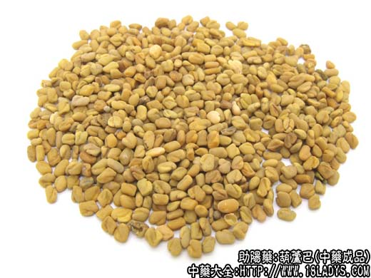
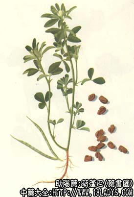

原文连接:https://www.daquan.com/post/2225.html



葫芦巴为少常用中药。始载《嘉祐本草》。
别名：芦巴子。
来源：为豆科一年生草本植物葫芦巴的成熟干燥种子。多为栽培。
产地：主产于安徽、河南、四川等省。其他各省多有栽培。
性状鉴别：本品呈不规则的扁斜方形或矩圆形，略似萝卜子。长3～4毫米，宽2～3毫米，厚约2毫米。表面黄棕色或棕红色，平滑，两面各具纵沟一条，为胚根与子叶的分界，两条纵沟的连接处有种脐与珠孔。质坚硬，不易破碎。用水浸泡后体形膨大，皮薄易脱，可见白色半透明肥厚的胚乳，搓之粘滑。子叶及胚根黄白色或黄棕色。气微，粉碎时有特异香气，味微苦，嚼之有黄豆味。
以种子成熟饱满，个大均匀者为佳。
主要成分：含大量甘露半乳糖、葫芦巴硷、胆硷、挥发油、蛋白质、少量脂肪油、维生素B1。
功效与作用：温肾阳。逐寒湿，作用可能主要为强壮和镇痛。
炮制：生用或盐水炒。用时捣碎。
性味：苦，温。
归经：入肝、肾经。
功能：补肾阳，祛寒湿，止疼。
主治：肾虚肾寒，疝气腹痛，阳痿，偏坠，小腹冷痛，寒湿脚气等症。
临床应用：1、主治寒痛而与肾虚有关者。尤常用于治疗虚寒疝痛，表现为小腹和睾丸有牵引痛，甚或囊收缩、局部冰冷，常配小茴香、荔枝核等，方如葫芦巴散。
2、治寒湿脚气之疼痛，表现为两脚酸胀、重坠、冰冷，时有疼痛，遇寒加剧，或有抽搐拘挛、脉沉缓、苔白腻，配补骨脂、木瓜、鸡血藤、牛膝等。
3、肾下垂之绞痛，虚寒较甚者，配熟附子、补骨脂、石菖蒲、生姜、大枣。
以上寒痛，中医认为与肾阳虚有关，故在治疗方剂内要适当加入湿补肾阳药。从现代医学观点看，这些寒痛多与体质虚弱、机体反应性差有关，适当选用有强壮作用的助阳药，改变体质，有助于消除症状。
此外，肾虚所致的滑精、腰酸背痛、性机能衰退（可见于慢性前列腺炎），可用葫芦巴配覆盆子、黄精、炙甘草等，有一定疗效。
使用注意：本品温而不燥，守而不走，治上述沉寒积冷之痛证有其价值，但阴虚阳亢者仍不宜用。
用量：2.4～6g。
处方举例：葫芦巴散：葫芦巴15g，荔枝核15g，黄皮核15g，芒果核15g，龙眼核15g，牛奶树寄生30g，小茴香7.5g，共为粗末，每服15g，包煎。或研为细末，每服1.5～4.5g，姜汤或温开水送服。